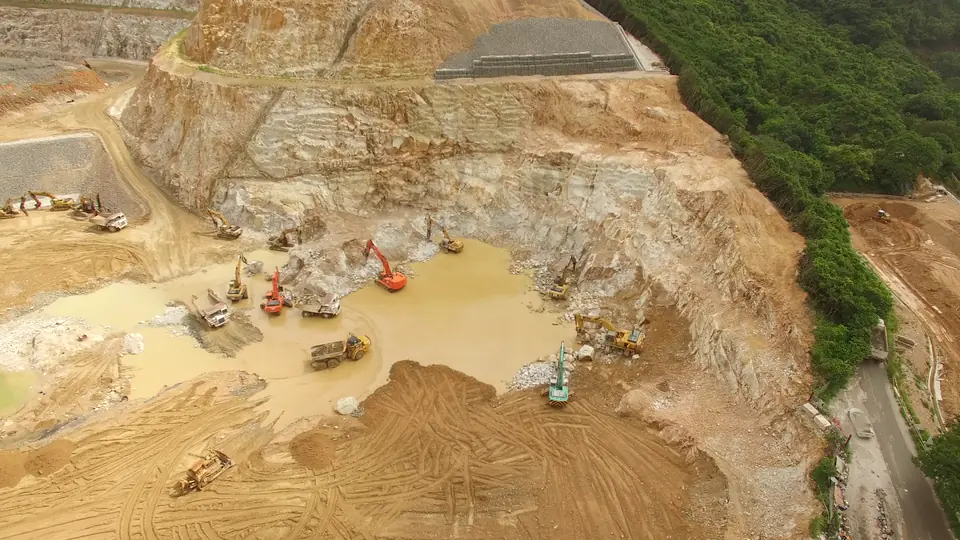

Сетка камер: событие — красной шапкой
!Камера 2, водостокНеизвестная машина в зоне

Камера 1, въезднорма

Камера 4, отвалнорма

Камера 3, дроннорма

Приём. В сетке камер кадр с событием получает красную шапку, остальные спокойные; зона на полу тонирована.
У нас. Пульт на 4 камеры: взгляд сразу падает на ту, где неизвестная машина заехала в зону.